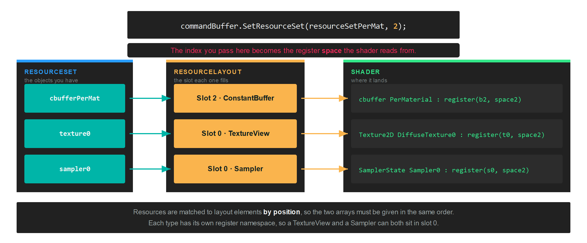

ResourceLayout
A ResourceLayout declares the shape of a binding: which slots a shader reads, what kind of resource sits in each one, and which stages can see them. It carries no data of its own. The data arrives later, in a ResourceSet built against this layout.
The same layout is referenced twice: once by the GraphicsPipeline or ComputePipeline that will run the shader, and once by every resource set you bind at draw time. That shared reference is how the backend knows a binding is valid before any command is recorded.
Creation
Build a ResourceLayoutDescription from one LayoutElementDescription per slot, then hand it to the factory:
var layoutDescription = new ResourceLayoutDescription(
new LayoutElementDescription(0, ResourceType.ConstantBuffer, ShaderStages.Vertex),
new LayoutElementDescription(0, ResourceType.TextureView, ShaderStages.Pixel),
new LayoutElementDescription(0, ResourceType.Sampler, ShaderStages.Pixel));
var resourceLayout = this.graphicsContext.Factory.CreateResourceLayout(ref layoutDescription);
ResourceLayoutDescription
| Property | Type | Description |
|---|---|---|
| Elements | LayoutElementDescription[] |
One entry per slot the shader reads. Order matters, because a resource set fills these by position. |
| DynamicConstantBufferCount | int |
Set by the constructor, which counts the elements that have AllowDynamicOffset. You do not assign it yourself. |
LayoutElementDescription
| Property | Type | Description |
|---|---|---|
| Slot | uint |
The register number inside its own namespace. A TextureView and a Sampler can both be slot 0. |
| Type | ResourceType |
What kind of resource fills this slot. |
| Stages | ShaderStages |
The stages that can read it. Combine flags to expose one resource to several stages. |
| AllowDynamicOffset | bool |
Lets you pass a byte offset when binding, instead of creating one buffer per draw. Constant buffers only. false by default. |
| Range | uint |
Overrides the size in bytes of this binding. 0 binds the whole buffer. Constant buffers only. Set through the constructor's size parameter. |
ResourceType
| ResourceType | Description |
|---|---|
| ConstantBuffer | A Buffer read as a uniform buffer. |
| StructuredBuffer | A Buffer read as a read-only storage buffer. |
| StructuredBufferReadWrite | A Buffer a shader can also write to. |
| TextureView | A read-only view of a Texture. |
| TextureViewReadWrite | A view of a Texture a shader can also write to. |
| Sampler | A SamplerState. |
| AccelerationStructure | A ray tracing acceleration structure. See RaytracingPipeline. |
ShaderStages
ShaderStages is a flags enum, so one element can be visible to several stages at once, as in ShaderStages.Vertex | ShaderStages.Pixel.
| ShaderStages | Value | Description |
|---|---|---|
| Undefined | 0 | No stage. |
| Vertex | 1 | Vertex shader. |
| Hull | 2 | Hull shader. |
| Domain | 4 | Domain shader. |
| Geometry | 8 | Geometry shader. |
| Pixel | 16 | Pixel shader. |
| Compute | 32 | Compute shader. |
| RayGeneration | 64 | Ray generation shader. |
| Miss | 128 | Ray miss shader. |
| ClosestHit | 256 | Closest hit shader. |
| AnyHit | 512 | Any hit shader. |
| Intersection | 1024 | Intersection shader. |
| Mesh | 2048 | Mesh shader, from Shader Model 6.5. |
| Amplification | 4096 | Amplification shader, from Shader Model 6.5. |
How a slot reaches the shader
Two numbers decide where a resource lands. The Slot on the layout element is the register number, and the index you pass to SetResourceSet is the register space.

Each resource type has its own register namespace, so slot numbers only ever collide within a type. In HLSL those namespaces are b for constant buffers, t for read-only reads, u for read-write access and s for samplers.
Important
The elements in a layout and the resources in the set that fills it are matched by position, not by slot number. Reordering one array without the other silently binds the wrong resource.
Group elements by how often they change
A pipeline can take several layouts, and you bind each one to its own space. Splitting them by update frequency means the per-frame data is not rebound with every material:
// One layout per update frequency...
var perDrawDescription = new ResourceLayoutDescription(
new LayoutElementDescription(0, ResourceType.ConstantBuffer, ShaderStages.Vertex, true, (uint)Unsafe.SizeOf<Matrix4x4>()));
var perViewDescription = new ResourceLayoutDescription(
new LayoutElementDescription(1, ResourceType.ConstantBuffer, ShaderStages.Vertex));
var perMaterialDescription = new ResourceLayoutDescription(
new LayoutElementDescription(2, ResourceType.ConstantBuffer, ShaderStages.Pixel),
new LayoutElementDescription(0, ResourceType.TextureView, ShaderStages.Pixel),
new LayoutElementDescription(0, ResourceType.Sampler, ShaderStages.Pixel));
// ...and the pipeline lists them in the order they will be bound.
var pipelineDescription = new GraphicsPipelineDescription()
{
ResourceLayouts = new[] { perDraw, perView, perMaterial },
// ...
};
At draw time each set goes to the index that matches its position in that array:
commandBuffer.SetResourceSet(this.resourceSetPerDraw, 0, new uint[] { this.stride * (uint)i });
commandBuffer.SetResourceSet(this.resourceSetPerView, 1);
commandBuffer.SetResourceSet(this.resourceSetPerMat, 2);
Tip
The first element above was declared with AllowDynamicOffset and an explicit size, which is what lets the third argument of SetResourceSet walk one shared constant buffer instead of allocating one per draw.
Cleaning up
resourceLayout.Dispose();